Спекулятивная кампания для сервиса доставки «Велосамокат»
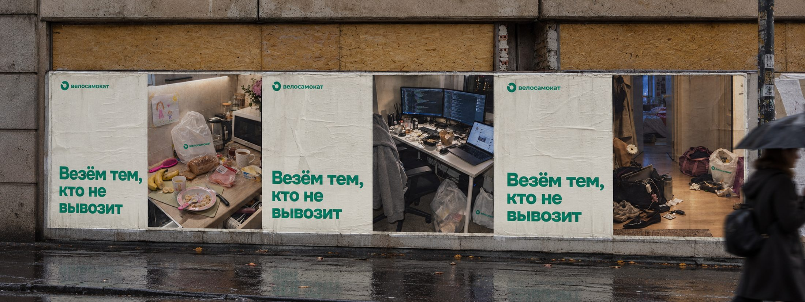
Это спекулятивный проект: кампанию я придумала сама, без заказчика и брифа. «Велосамокат» — вымышленный бренд. Кампания не делалась по заказу какого-либо реального сервиса доставки и ни с кем не согласована. Мне хотелось проверить одну гипотезу о том, как бренды могут говорить об усталости внутри бренд-кома.
Я — Лиза Александрова, бренд-стратег и трендвотчер. Работаю на стыке стратегии, качественных исследований и культурной аналитики.
Как стратег я давно ищу возможность поработать в бренд-коме с чувством современной усталости.
Усталость — чувство, которое мы так или иначе разделяем, поэтому это хорошая рамка для разговора с широкой аудиторией. При этом бренды до сих пор говорят о ней в основном очень поверхностно. Замечая усталость, реклама почти всегда предлагает её вылечить: выспаться на нашем матрасе, взбодриться нашим кофе, разгрузить голову нашим приложением.
Мне это кажется нечестным.
Усталость современного человека скорее экзистенциальная, чем физическая, и все понимают, что ни один продукт её не отменит.
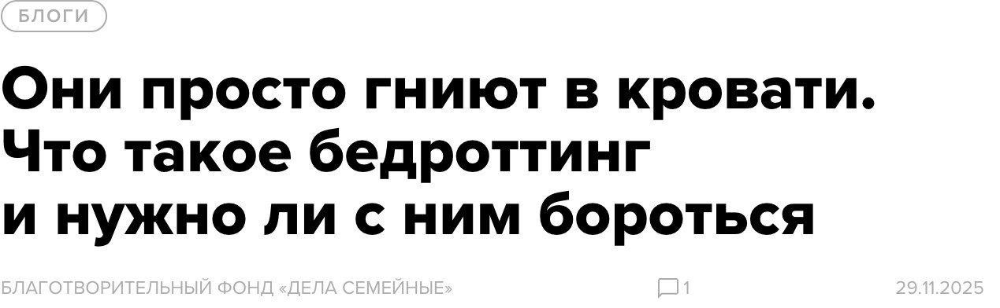
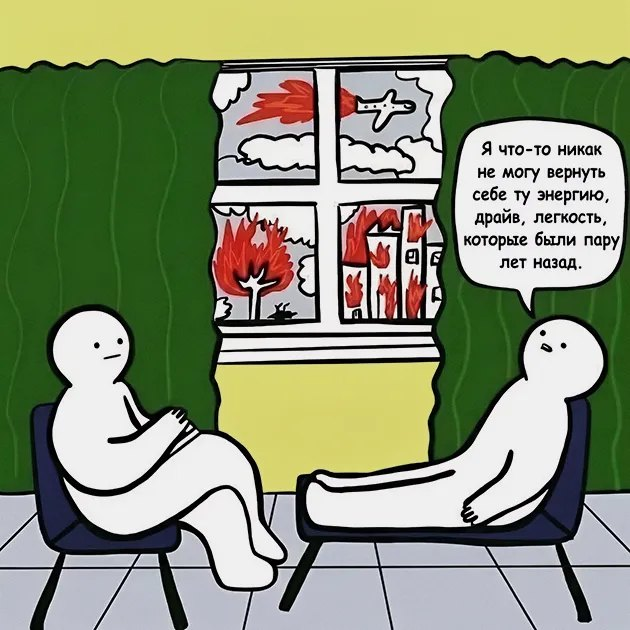
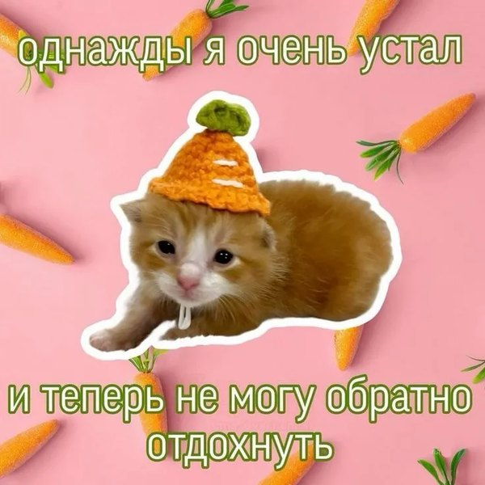
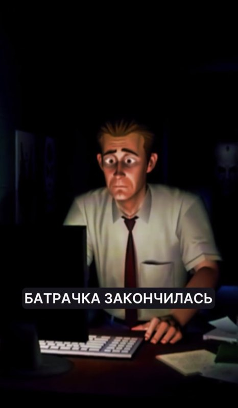
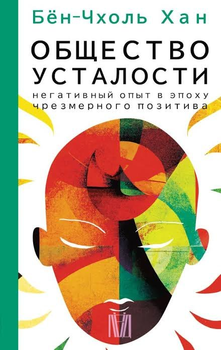
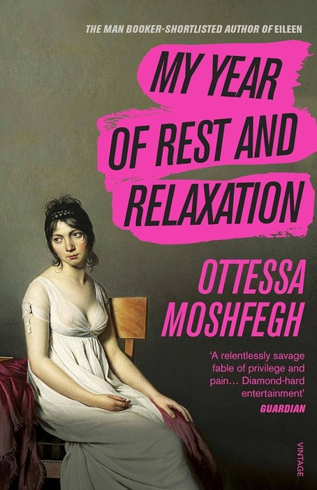
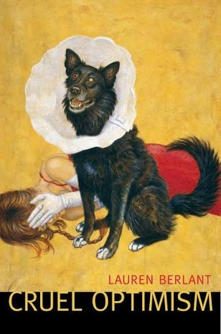
Наведите курсор на книгу
Мне захотелось придумать рекламу, которая не будет обещать исправить усталость, а заметит её такой, какая она есть, и внимательно в неё всмотрится.
Я сразу подумала про сервис доставки, потому что это очень органичная категория для разговора об усталости.
Готовую еду мы часто заказываем на пределе усталости — в моменты, когда больше не вывозим.
Из всего этого сложился слоган гипотетической кампании для гипотетического сервиса «Велосамокат»:
Везём тем,
кто не вывозит
Каждый кадр — портрет человека, которого в кадре нет. Снэпшот повседневности, которую кто-то за кадром не вывозит.
Пространства я намеренно перегрузила деталями. Такой плотностью я хочу одновременно передать само ощущение перегруженности и дать повод всмотреться — по следам собрать того, кому принадлежит этот мир.
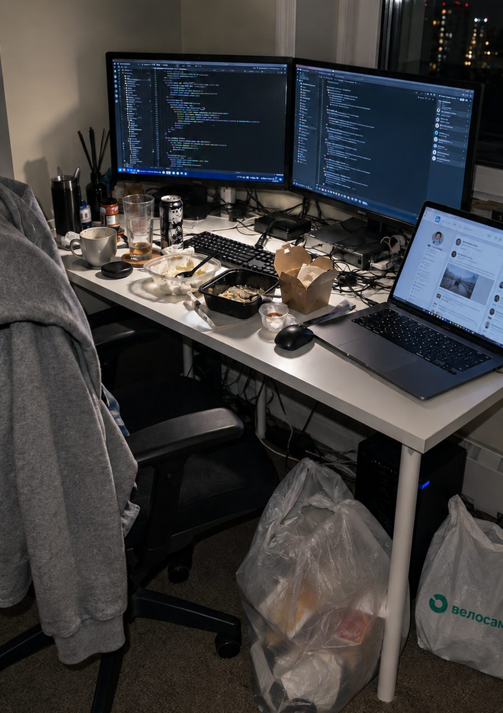
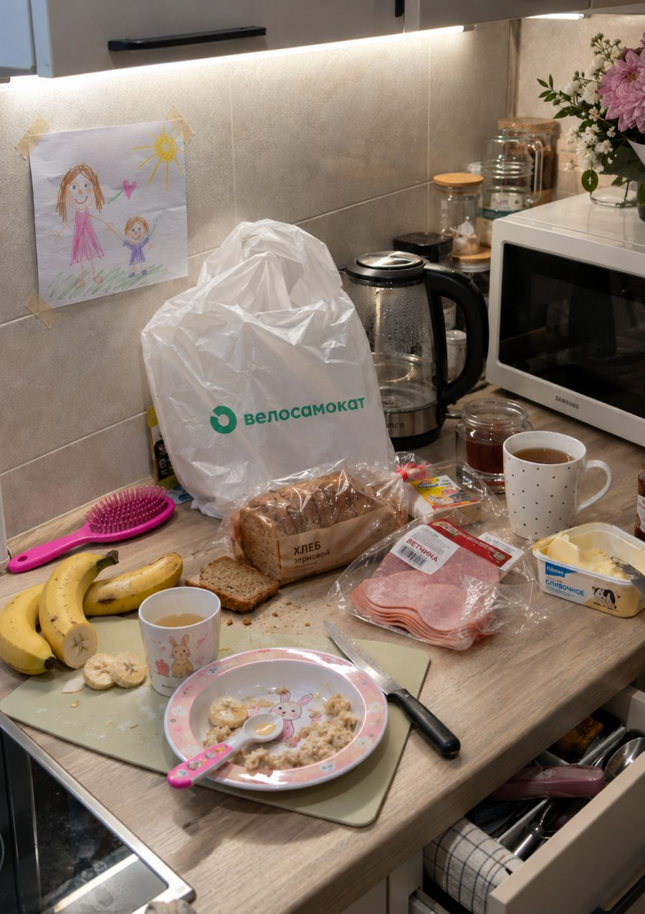
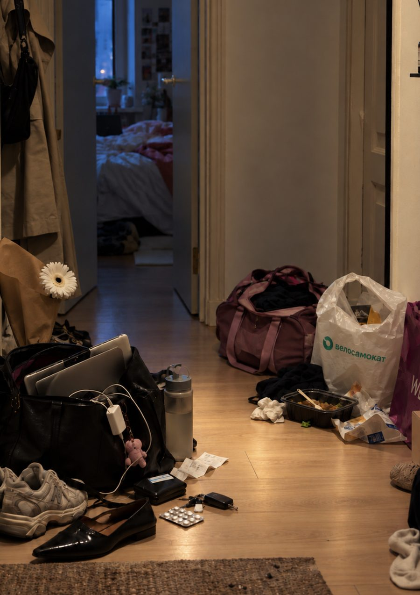
Кадр работает на двух уровнях:
Инсайт быстро цепляет внимание.Усталость и ощущение «не вывожу» узнаются почти моментально.
Изображение удерживает внимание.Чем дольше человек рассматривает пространство, тем дольше остаётся рядом с брендом.
Наружка — основной формат, в котором я вижу эту кампанию.
Кадр держится на деталях, а детали лучше всего читаются крупно и там, где человек и так настроен задержаться.
Поэтому место для этой наружки — в тех частях города, где мы ждём: остановки у бизнес-центров, стенды у музыкальных и спортивных школ и секций, пересадки с метро на автобус по дороге домой.
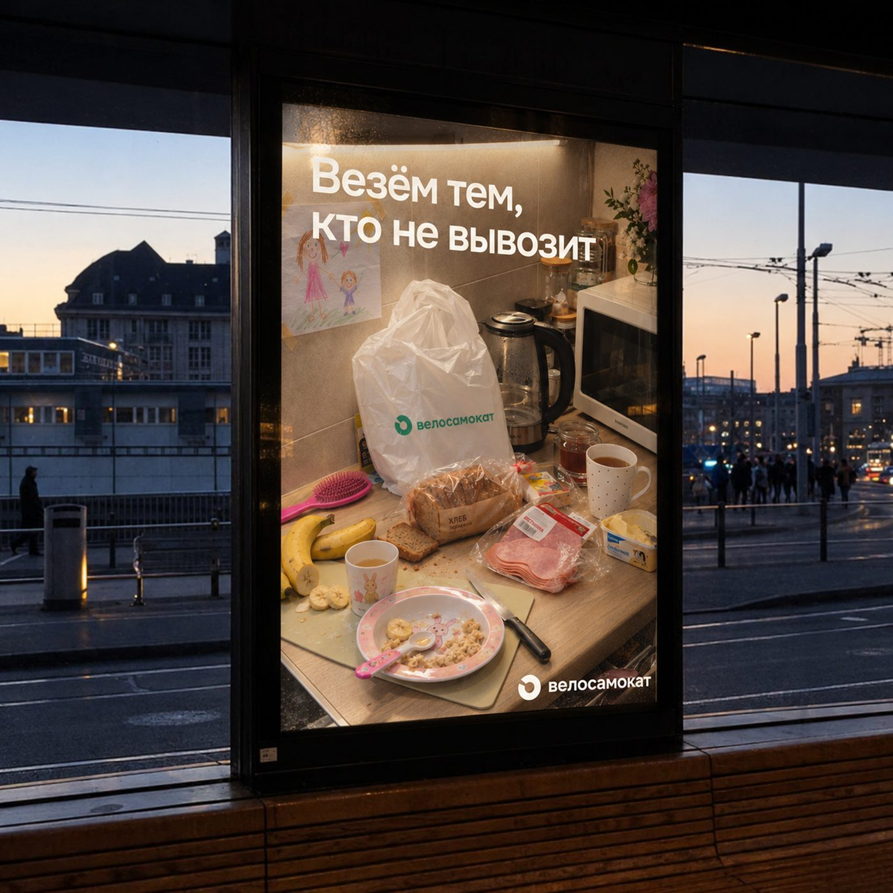
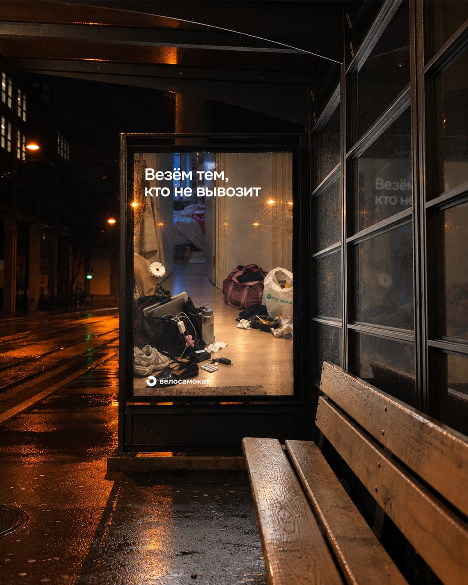
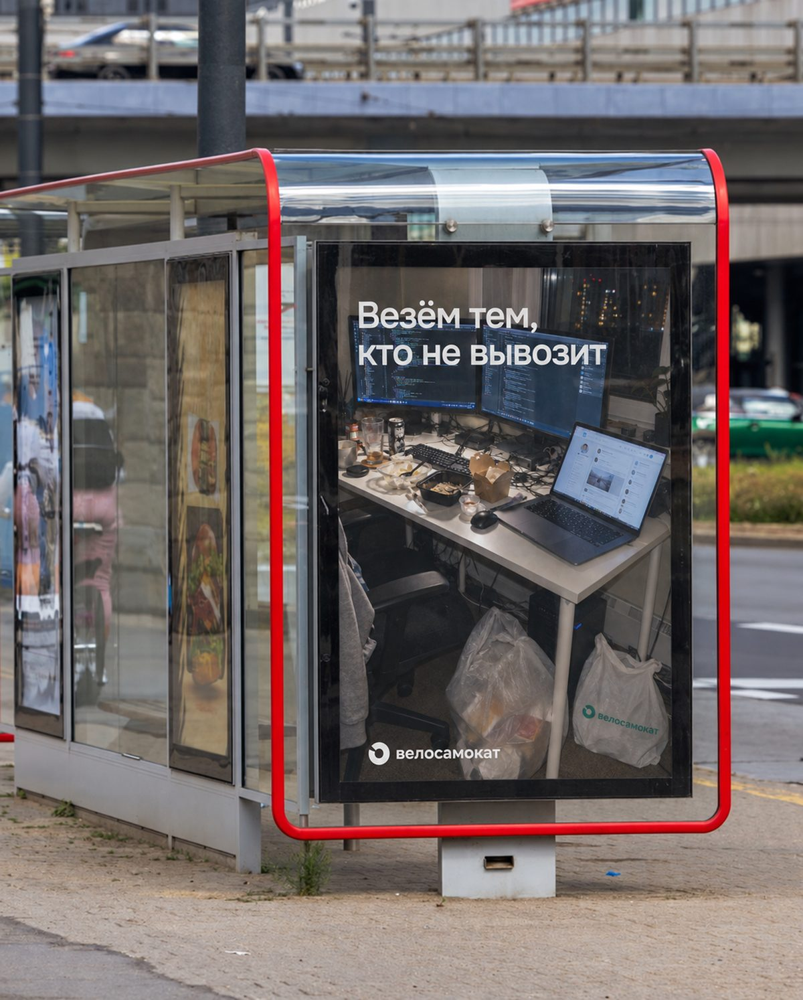
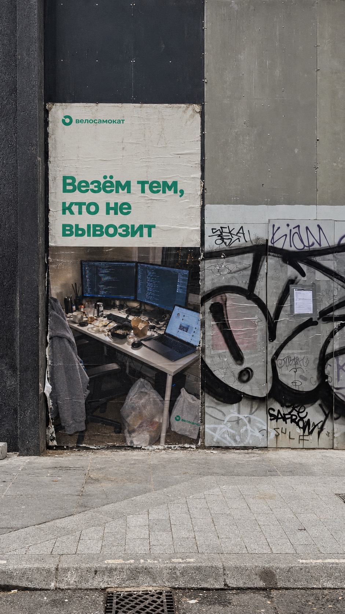
Когда я придумывала эту кампанию, мне хотелось сделать что-то нужное не только бренду, но и нам всем — с нашей общей усталостью.
И мне очень нравится этот концепт тем, что он не только забирает внимание, но и возвращает его человеку.
Через узнавание он подталкивает увидеть своё пространство как часть личной истории и, возможно, почувствовать чуть больше авторства и тепла в отношениях с собственной повседневностью.
Не на это ли сейчас у нас самый острый запрос?